20261020100000_owner_desk_workflow.sql) and one server function deployment (quote-response) before it is merged to main. The steps are in section 15. All screenshots show the built-in demo mode with fictional records; none show a real customer.01How to read this manual
Every feature carries one of these labels, so nobody mistakes a tested build for a live system:
| Label | Meaning |
|---|---|
| Tested locally | Exercised in a real Chromium browser against the built-in demo data, and covered by automated tests. Not yet used against the live database. |
| Live | Already running in production before this redesign and carried over unchanged. |
| Needs activation | Code is ready; it needs the database update, a function deployment or a setting that only Mark can authorise. |
| Not built | Not part of this release. Never describe it to a customer as available. |
Principle behind the design. A person who has never seen Owner Desk should know within five minutes what needs attention, what to do next and where to find any customer, quotation, job or invoice. Everything about one customer lives on one screen, the customer workspace, and every section links back to it.
02Navigation map
Five sections, the same on every device. On a phone or folded Galaxy Z Fold they sit in the bar at the bottom; on a laptop or the unfolded Fold they are down the left-hand side. Settings is the gear icon at the top. The search box at the top finds any customer, quotation number (FFQ-…), invoice number (FFI-…), job number (FFJ-…), postcode or email; press / on a keyboard to jump to it.
The workspace always has ‹ Back to … at the top, naming the section you came from. Public website ↗ (in the side menu and in Settings) opens the customer-facing site in a new tab, so it is never confused with Back.
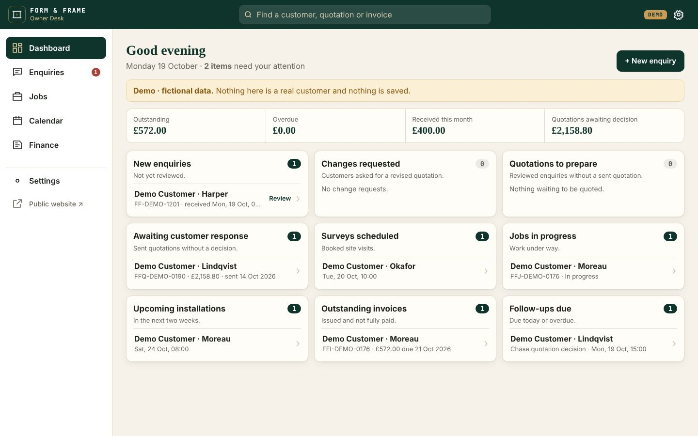
03Dashboard Tested locally
The daily command centre. The heading counts the items that need you. Every row opens the customer workspace directly.
| Queue | What appears there |
|---|---|
| New enquiries | Website or manual enquiries nobody has reviewed yet. |
| Changes requested | Customers who used their quotation link to ask for changes. Shows the start of their message. |
| Quotations to prepare | Reviewed enquiries with no sent quotation, including unfinished drafts. |
| Awaiting customer response | Sent quotations with no decision yet. |
| Surveys scheduled | Booked site visits from today onwards. |
| Jobs in progress | Work under way (in progress or quality check). |
| Upcoming installations | Installations in the next two weeks. |
| Outstanding invoices | Issued invoices not fully paid; overdue ones are marked. |
| Follow-ups due | Follow-up reminders due today or overdue. |
The money strip shows outstanding and overdue balances, money received this month and the value of quotations awaiting a decision. Figures come only from saved invoices, payments and quotations; website guide prices are never counted. Unread notifications appear above the queues.
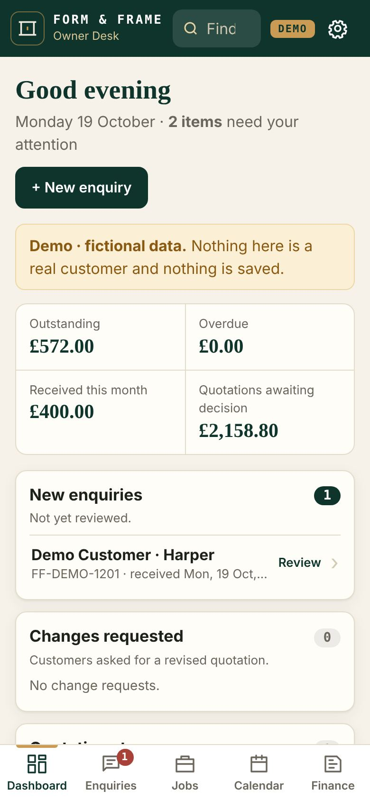
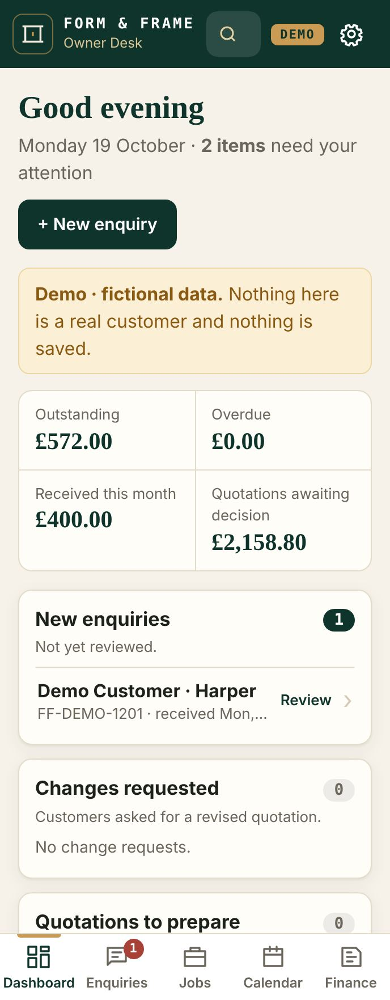
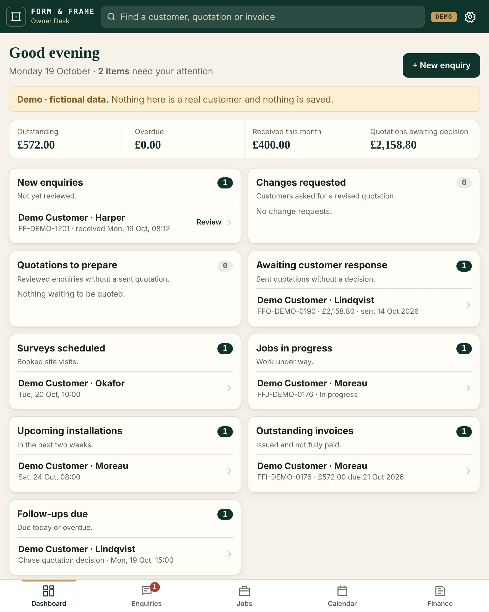
04Enquiries Tested locally
Every enquiry in one list: customer name, reference, date received, enquiry stage and the next action. Filters: Open (default), New, Survey, Quoting, Won, Closed, Deleted and All, each with a count. The search box matches name, reference, email, phone, postcode, message, and any quotation, job or invoice number belonging to the customer.
+ New enquiry creates an enquiry by hand (for a phone or walk-in customer) and opens its workspace.
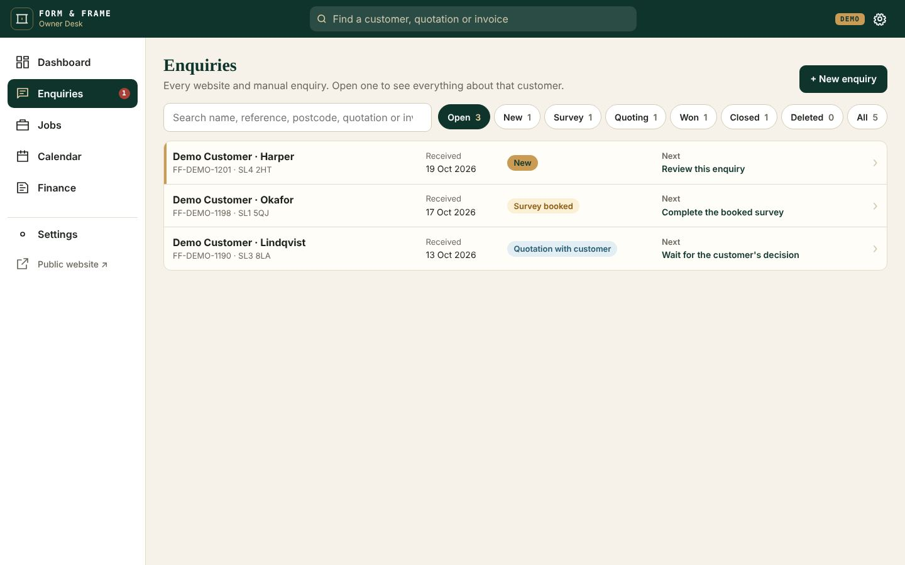
05Customer workspace Tested locally
The heart of the system. Every action for a customer is here; you never need to leave it to edit or send a quotation.
Top of the screen
- Name, reference and date received.
- Four separate statuses: Enquiry, Quotation, Job and Invoice. They are never squeezed into one field (see section 20).
- Next step: one recommended action with a single button, for example “Prepare the quotation”, “Revise the quotation”, “Schedule the installation”.
- Progress timeline: Enquiry received → Reviewed → Site survey → Quotation prepared → Quotation sent → Customer decision → Installation booked → Work in progress → Completed → Invoiced & paid. Completed steps are ticked; the survey step shows “Not needed” when it was skipped.
Sections
| Section | What you can do |
|---|---|
| Quotation | Create, edit (drafts only), preview PDF, send to customer, copy the link again, create a revision, record the customer's answer if they replied by phone or email, discard a draft, create the job once accepted. |
| Appointments | Book a survey or installation, reschedule, mark done, cancel, view in calendar. Follow-ups are listed here with Mark done. Switch “Require a survey first” on or off. |
| Job | Move the job forward or back (pause, reschedule), cancel it, set dates and the person assigned. |
| Invoice & payments | Create the invoice from the accepted quotation, preview PDF, issue it, record payments, discard a draft. |
| Customer details | Name, email, phone, address, postcode, the configurator design (wall size, TV, finish, fronts, handles, side units, fire, lighting, extras), the customer's message, internal notes and uploaded photographs. Edit details changes any of them. Email and Call buttons open your own email app or phone. |
| Documents | Every quotation version and invoice with its status and an Open PDF button. |
| Activity | Enquiry received, quotation created, sent, link opened by the customer, customer accepted, declined or asked for changes, appointments booked, job and invoice changes and payments, each with who did it. |
| Manage enquiry | Change the enquiry stage (including stepping back), close as not proceeding, archive, delete, restore. |
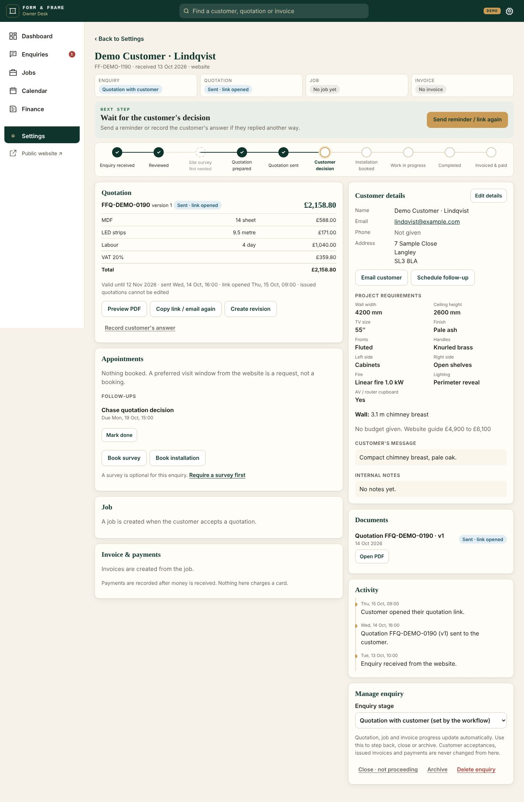
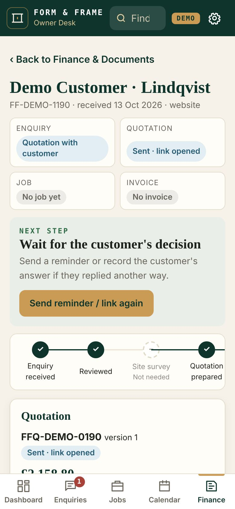
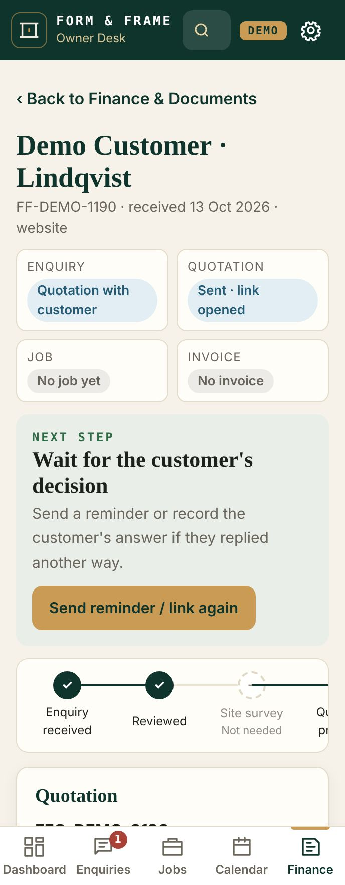
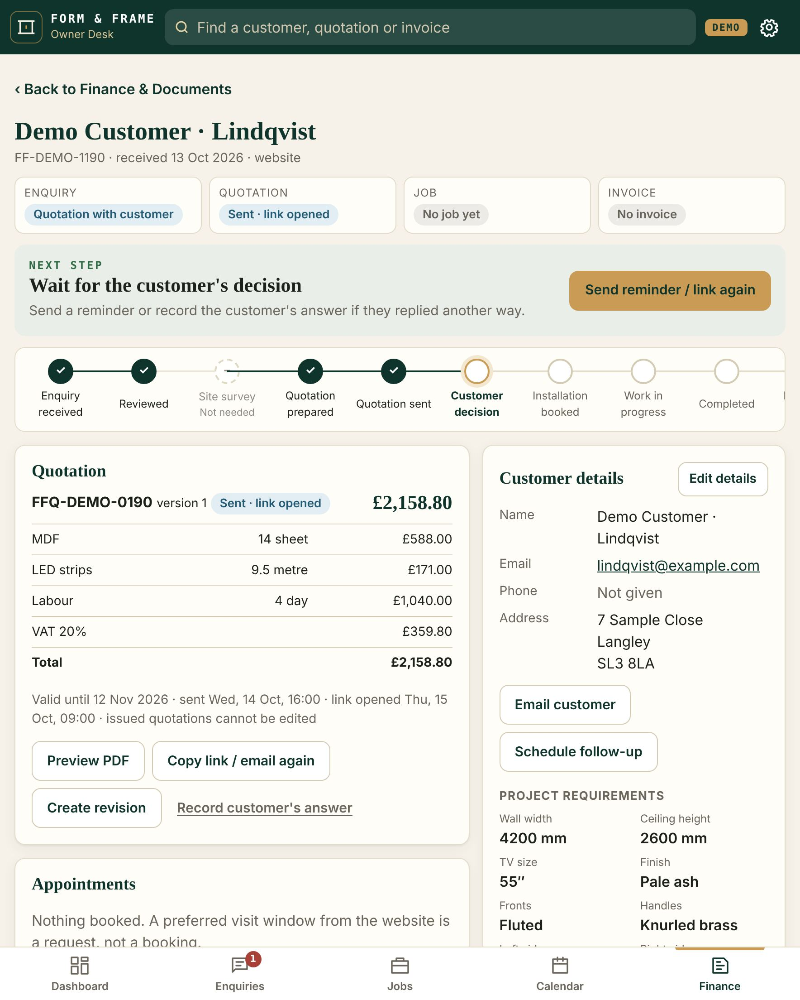
06The workflow, step by step
- New enquiryA customer submits the website form. The server saves it and sends the staff push notification Live. It appears in Dashboard → New enquiries and in Enquiries.
- ReviewOpen it, read the requirements and press Mark as reviewed. Edit any detail with Edit details. From here: email or call the customer, book a survey, prepare a quotation, or close it as not proceeding.
- Site survey, if neededPress Book survey: date, time, duration, who is going and where. It appears in the Calendar and the workspace. A survey is optional unless you switch on “Require a survey first”; then a quotation cannot be sent until the survey is marked done.
- Prepare the quotationPress Prepare quotation. The editor opens over the workspace (section 7). Save as a draft as often as you like.
- Send the quotationPress Send to customer: check the PDF, press Create link & mark as sent, then Open email draft, attach the saved PDF and send it from your own email. The quotation is now locked.
- Customer decisionThe customer opens their link and accepts, declines or asks for changes (section 9). Owner Desk updates on its own and notifies staff. If they answered by phone, use Record customer's answer; it asks you to confirm and records your name.
- Accepted jobPress Create the job. The job is created at the accepted price and appears in Jobs under “Accepted · awaiting scheduling”.
- Schedule installationPress Schedule installation: date, time, duration, team member and location. The calendar refuses times that clash with another booking or blocked time.
- Work in progressMove the job on: start the work, quality check, ready for installation, installed, completed. Backward steps are available where they make sense (pause, reschedule).
- Invoice and paymentPress Create invoice; amounts start from the accepted quotation and can be changed for a deposit. Preview, Issue invoice, send the PDF yourself, then Record payment when money arrives.
07Quotation editor Tested locally Needs activation
A small invoicing application inside the workspace. It opens from Prepare quotation, Edit quotation or Create revision; on a phone it fills the screen, with Save and Cancel always visible at the bottom.
Materials and services
Each line has a description, quantity (up to two decimals, such as 9.5 metres), unit, unit price and line total. Type in the description box to search the standard items (MDF, Timber, Plasterboard, LED strips, Electrical work, TV mounting, Fireplace installation, Painting & decorating, Labour, Delivery, Design & planning, Site survey) or type any custom item. Choosing a standard item fills in its unit and, if the owner has set one, its default price. Every price stays editable. + Add item and × add and remove lines.
Discount and totals
Tick Apply discount and choose 5%, 10%, 15%, 20%, 25%, a custom percentage or a fixed amount in pounds. The totals panel updates as you type: items subtotal, discount, subtotal after discount, VAT and grand total. VAT defaults to 20% only when a VAT number is saved in Settings, otherwise 0%; it is always your decision.
Also on the form: scope of work, exclusions, terms and the validity date. Exclusions and terms start from the defaults in Settings.
Exact money. All amounts are calculated in whole pence and quantities in hundredths, never floating-point numbers, and the database recalculates every line and total and refuses anything that does not match. Example from the automated tests: 12 sheets at £38.50 plus 3.5 days at £240, 10% discount, 20% VAT, totals £1,406.16 exactly.
Issued quotations are locked. Once sent, prices, lines, discount, scope, exclusions and terms cannot change. Create revision copies the lines into a new version (for example FFQ-20261020-AB12-R2). When the revision is sent, the earlier version becomes “Replaced by revision” and its link stops working. Only the newest version can be accepted, and an enquiry can never have two accepted quotations.
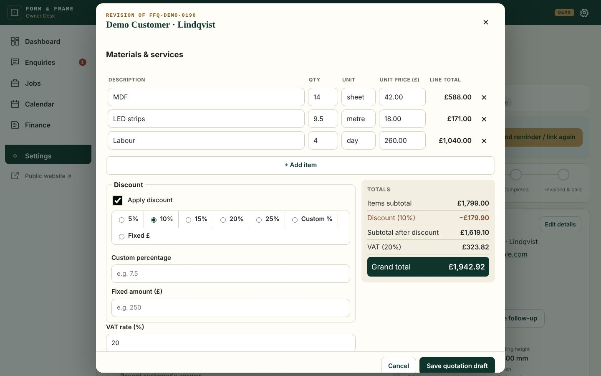
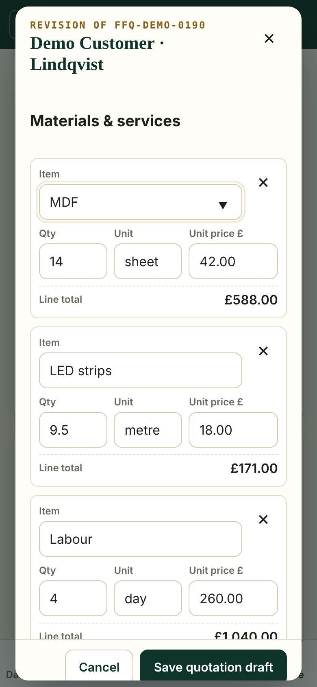
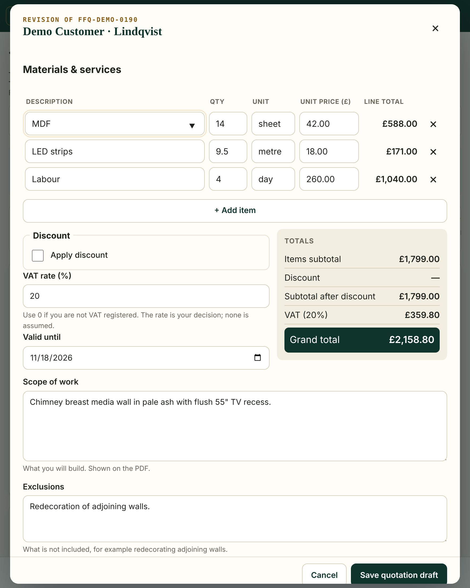
08Quotation and invoice PDFs Tested locally
Preview PDF opens the document inside Owner Desk. Print / Save as PDF uses your device's print dialog: choose “Save as PDF” to get a real PDF file to attach to your email. This works in Chrome and Safari on laptops; on phones it uses the system print or share sheet not yet checked on a physical phone.
Both documents use the Form & Frame letterhead: the green and brass FF frame mark from the app icon, the Playfair Display wordmark, forest green #0e342c, brass #c99b55 and warm paper #f1ecdf. The quotation shows the customer, quotation and project references, issue and expiry dates, scope, every line, the discount, VAT, the total, exclusions, terms and how to respond (including the secure link). Unsent drafts carry a red “DRAFT · NOT SENT” stamp. The invoice matches it and shows payments received and the balance due.
No company details are invented. The legal name, address, company number, VAT number and payment instructions come from Settings. If they are missing, the quotation says “Company details not yet configured” and invoice PDFs stay disabled.
Stored versions. Each issued quotation is kept unchanged in the database (it is locked), so its PDF can be reproduced exactly at any time from the workspace or Finance & Documents. A separate archive of PDF files in storage is not built.
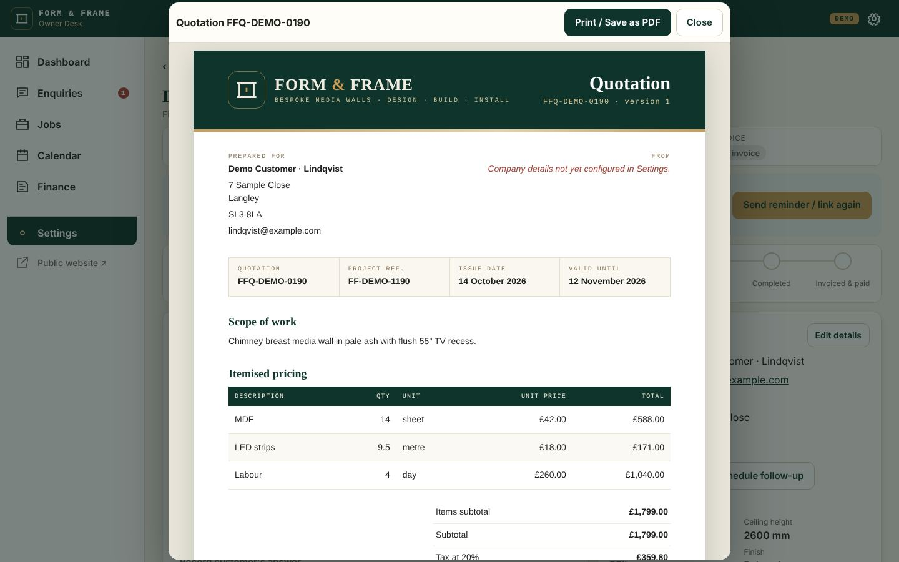
09Customer acceptance page Tested locally Needs activation
When you send a quotation, Owner Desk creates a secure link such as …/quote-response.html?token=…. The customer opens a branded Form & Frame page showing the full quotation (lines, discount, VAT, total, exclusions and terms) and three choices:
Accept quotation
Asks them to confirm, records the time and moves the enquiry to Won. Staff are notified. No payment is taken.
Request changes
Asks for a message. The quotation shows “Revision requested” with their words and appears in Dashboard → Changes requested.
Decline quotation
Asks them to confirm and closes the enquiry as not proceeding. Staff are notified.
Security. The link contains 64 random characters; only a fingerprint (SHA-256 hash) is stored, so the link cannot be recreated from the database. It expires after 30 days, works for one answer only, stops working when a newer version is sent, and cannot be used on an unsent draft or after the validity date. The page removes the code from the address bar as soon as it opens. The server function only accepts requests from the Form & Frame website address. “Link opened” is shown in the workspace only when the customer's browser actually loaded the quotation.
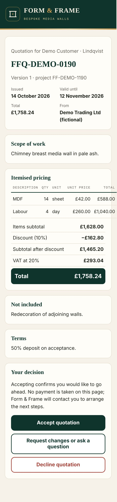
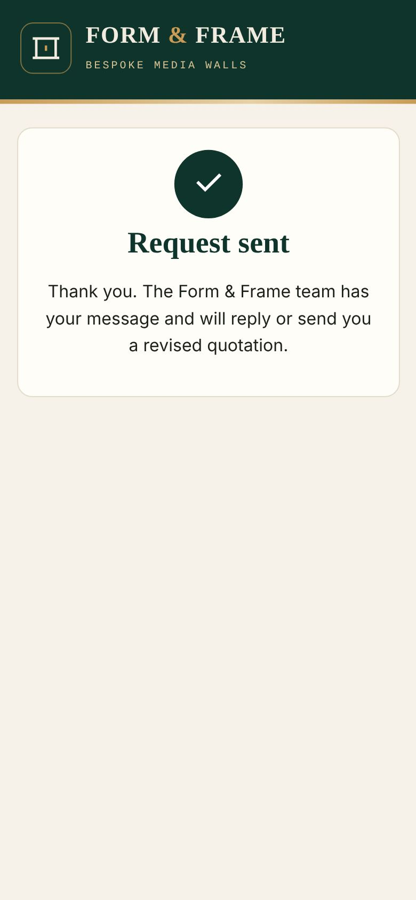
10Jobs Tested locally
Every live project on a board, left to right: Awaiting survey → Preparing quotation → Awaiting customer → Accepted · awaiting scheduling → In progress → Installation scheduled → Completed. Each card shows the customer, reference, value, the next booked visit and the next step; tap it to open the workspace. List shows the same groups as a list. New, unreviewed enquiries stay in Enquiries until someone reviews them.
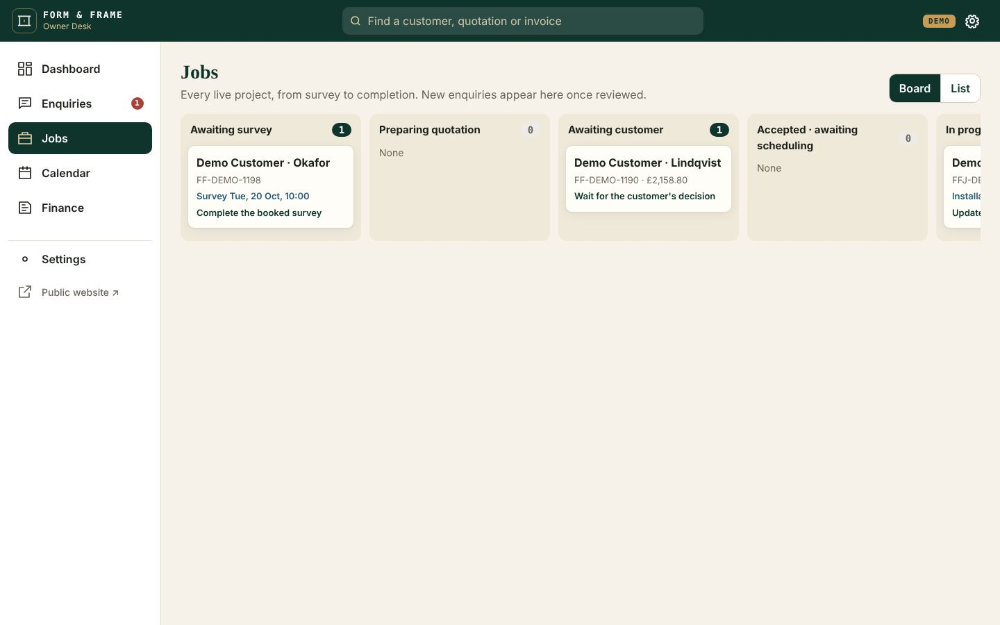
11Calendar Tested locally
One calendar with surveys, installations, follow-ups, project dates (build start and target completion) and blocked time. Choose Agenda (the default on phones), Week or Month. Every customer entry opens that customer's workspace. Block time off marks holidays or closures; bookings that overlap blocked time or another booking are refused with a clear message. A customer's preferred visit window from the website is shown in their details as a request, never as a booking.
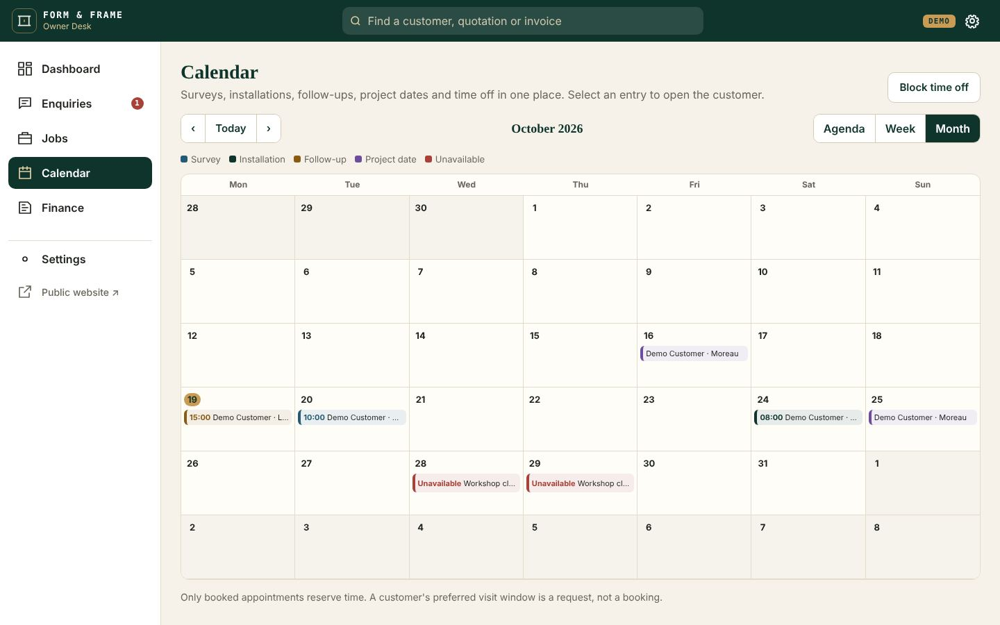
12Finance & Documents Tested locally
A searchable archive of every quotation (all versions), invoice and payment, with totals for invoiced, received, outstanding and overdue. Search by customer name, quotation number, invoice number or project reference, and filter by type. Each quotation and invoice has View PDF; each customer name opens the workspace.
Invoice statuses: Draft, Issued · awaiting payment, Partially paid, Paid, Overdue, Void. Payments are recorded only after money has been received; Owner Desk never charges a card. Recording the same payment twice (for example after a poor connection) is prevented.
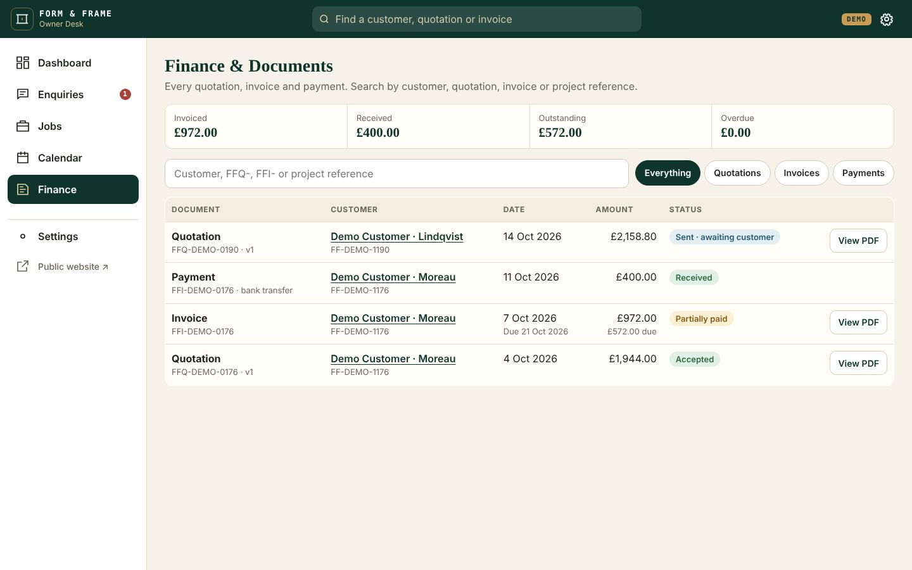
13Notifications Live Needs activation
The bell at the top opens the notification centre: an inbox and the per-device settings (turn alerts on, install the app, send a test, choose categories). This is carried over unchanged from the current Owner Desk.
| Event | Status |
|---|---|
| New enquiry | Live |
| Customer accepts or declines a quotation | Live through the existing quotation status alerts |
| Customer requests changes | Needs activation (database update) |
| Appointment booked, moved or cancelled; job, invoice and payment changes | Live |
| Reminders before an upcoming survey or installation, overdue follow-ups | Not built; they show on the Dashboard instead |
Tapping a notification opens the right customer, or the right section when there is no customer. Repeated identical alerts within 30 seconds are suppressed, and you are not alerted about your own actions.
14Settings and administration
Only an owner can change these. Company details: legal company name, business address, contact email, phone, company number, VAT number (only if registered), payment instructions, invoice footer, and default quotation terms and exclusions. Standard items: add items, change units and optional default prices, or switch items off (items are never deleted, so old quotations stay explainable). Your account: notification settings, the public website and sign out.
Staff accounts are added in Supabase (Authentication → Users, then a profiles row with role owner or staff); there is no in-app invitation, by design. Sign-in uses a one-time email link with no passwords.
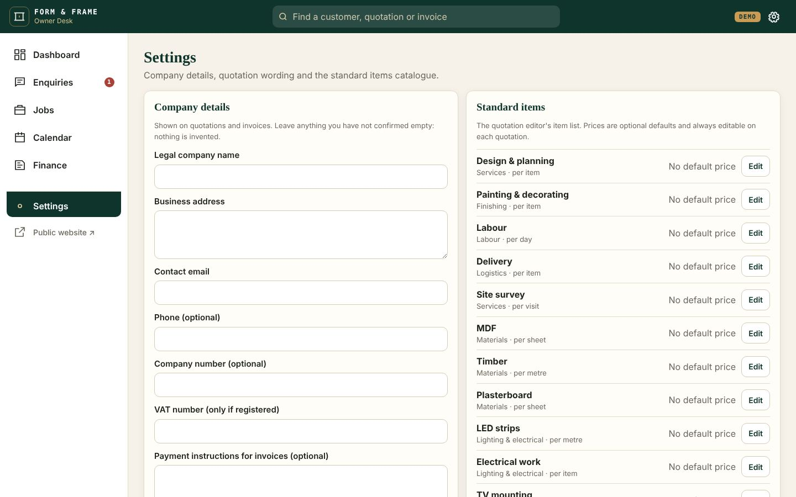
15Deployment and switching it on
Hosting. Vercel builds the site with node scripts/build-public.mjs and serves dist/public; pushes to main deploy to production. The backend is the dedicated Supabase project otqzhocismdjbvvsjnpe.
main before step 2 would leave quotation saving disabled. Nothing below has been done yet.- Read-only pre-flightIn the Supabase SQL editor for
otqzhocismdjbvvsjnpe:select request_id, count(*) from public.quotes where status = 'accepted' group by 1 having count(*) > 1;must return no rows. The migration also checks this and stops safely. - Apply the database update
supabase db push --linked --dry-runmust list only20261020100000_owner_desk_workflow.sql; then apply it. It adds columns and functions without changing existing records. - Deploy the customer page function
supabase functions deploy quote-response. Optionally setALLOWED_ORIGINSto the site address(es); the default ishttps://form-and-frame.vercel.app. - Merge the branch to mainVercel deploys the new Owner Desk and customer page.
- Owner set-upIn Settings, enter the confirmed company details and check the standard items.
- Acceptance test with a test recordCreate a manual enquiry with your own email, prepare and send a quotation, open the link on your phone, request changes, revise, accept, create the job, schedule the installation, invoice and record a test payment. Archive or delete the test enquiry afterwards. Do not use a real customer's record for customer-facing tests.
16Security and data handling
- All business records are protected by Supabase sign-in and row-level security. The app shell is public; the data is not. Only accounts with an owner or staff profile can see anything.
- The browser holds only the public anon key and public push key. Server keys, database passwords, push secrets and any email keys stay in Supabase and Vercel settings.
- Customer links are random, single-use, expiring and stored only as a fingerprint. The customer page reads and answers through a server function that only the server can call into the database with.
- Issued quotations, accepted quotations, issued invoices and recorded payments cannot be edited or deleted. Stepping a stage back never changes a customer's acceptance, an issued invoice or a payment.
- Deleting an enquiry is a recoverable soft delete, allowed only while it has no issued quotation and no job; otherwise it must be archived.
- Demo mode, used for the screenshots, runs entirely in the browser on fictional records and never connects to the database.
17Troubleshooting
| You see | What it means and what to do |
|---|---|
| “Itemised quotations need the October database update” | Step 2 of section 15 has not been applied. |
| “That time overlaps another booking” or “blocked time off” | Choose another time, or remove the blocked time in Calendar. |
| “A newer version of this quotation has already been issued” | Work on the newest version; older ones cannot be sent or accepted. |
| “This enquiry already has a draft quotation” | Open and finish the existing draft, or discard it first. |
| “Must be archived instead of deleted” | The enquiry has an issued quotation or a job. Use Archive. |
| Invoice PDF button disabled | Add the company name, address and contact email in Settings. |
| Customer says their link does not work | It may have expired, been answered or been replaced. In the workspace use Copy link / email again to create a new link (the old one stops working). |
| “Your records could not be loaded” | Connection problem; press Try again. Nothing was changed. |
| Signed in but “not added to the team” | The account has no owner or staff profile. Add it in Supabase. |
| No alerts on a phone | Bell → Settings & install. On iPhone, add the app to the Home Screen first. |
18Verified versus unfinished
What was actually tested
- Automated tests: the full suite (
TZ=Europe/London node --test) passes, including new tests for exact money calculations, the four status models, the next-step logic, search, the calendar, the quotation and invoice documents, the customer page function and the database rules in the new migration. - Real browser, demo data (Chromium): an 18-step run covering company details; dashboard to workspace; review; editing customer details; stepping a stage back; the editor with catalogue items, quantities, prices, 10% and fixed discounts and VAT; saving and re-editing a draft; the PDF; creating the secure link and locking the quotation; a change request, revision and automatic superseding of version 1; acceptance; creating the job; scheduling the installation and finding it in the calendar; a refused clashing booking; invoice, issue and part payment; the documents archive search; job steps forward and back; delete, find in Deleted and restore; a refused delete; and global search.
- Layouts: laptop (1440 px), phone (390 px), Galaxy Z Fold folded (344 px) and unfolded (884 px) widths, with no sideways scrolling and every main control at least 38 px tall, emulated in Chromium rather than on physical devices.
- Customer page: loaded with the server function simulated; showed the full quotation, removed the code from the address bar, refused an empty change request and sent a valid one.
Not verified
- Nothing has been run against the live database or the real Axl Rose record. The redesign is not deployed; the database update and function deployment are pending (section 15).
- Saving data in demo mode does not survive a page refresh, so “saving persists after refresh” can only be checked against the live database.
- Printing to PDF and push alerts on physical phones.
Not built in this release
- Automatic emails to customers (no delivery service configured; emails are prepared for you to send).
- Online card payments (Stripe is not connected).
- A stored archive of PDF files (issued versions are kept in the database and regenerated exactly).
- Reminder alerts before upcoming visits and for overdue follow-ups (shown on the Dashboard instead).
- A separate log for “customer contacted” (use internal notes or a follow-up).
19Demonstrating to Anthony and Thiago
Open Owner Desk from a copy with no backend configured and it starts in demo mode with five fictional customers, clearly marked DEMO. Suggested ten-minute walk-through:
- DashboardPoint out the queues and that every row opens a customer.
- New enquiryOpen Harper, mark as reviewed, edit a phone number.
- QuotationPrepare a quotation with MDF, LED strips and labour, apply 10%, save, preview the PDF.
- SendCreate the link and show the email draft.
- Customer answerShow Lindqvist, whose quotation link has been opened.
- JobShow Moreau: job in progress, installation booked, invoice part paid.
- Calendar and FinanceOpen an entry from each.
20Status reference
| Record | Statuses you will see | How it changes |
|---|---|---|
| Enquiry | New · Reviewing · Survey required / Survey booked · Preparing quotation · Quotation with customer · Won · Closed (not proceeding) · Archived · Deleted | You set New, Reviewing, Survey required, Closed and Archived; the rest follow the quotation and job. |
| Quotation | Draft · Sent · awaiting customer · Sent · link opened · Revision requested · Accepted · Declined · Expired · Replaced by revision · Discarded draft | Sending locks it. The customer's link or a confirmed staff record sets Accepted or Declined. |
| Job | Awaiting scheduling · In progress · Installation scheduled · Completed · Cancelled (with the detailed step shown beneath) | Job buttons in the workspace, including backward steps. |
| Invoice | Draft · Issued · awaiting payment · Partially paid · Paid · Overdue · Void | Issue invoice and Record payment; Paid and Overdue follow from payments and the due date. |
AppendixThe public website
Unchanged by this release. The single-page site at form-and-frame.vercel.app has the media wall configurator, the price guide and the enquiry form, which saves through the server-side submit-enquiry function with rate limiting. Earlier screenshots of the site remain in docs/images/.